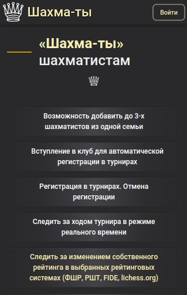
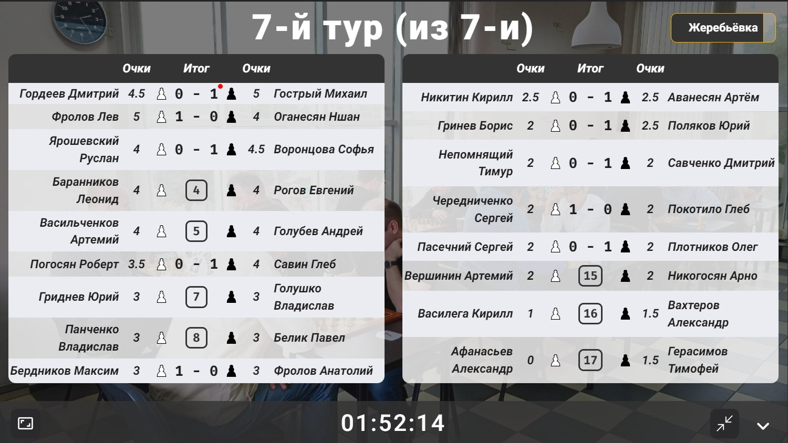

Разработка компьютерного программного обеспечения под ключ любой
сложности, для автоматизации бизнеса.
Надежность, скорость, современный дизайн
Пока вы занимаетесь делом
Мы превратили создание web-приложений в увлекательный, простой
и интересный процесс
Ваши клиенты, сотрудники и партнёры
Могут быть объединены в одном удобном цифровом пространстве
По расписанию
Автоматические задачи выполняются по расписанию именно так,
как вы всегда мечтали...
Отслеживание хода выполнения задач в проекте
Иногда приятно понаблюдать, как лихо сотрудники и партнеры
справляются со своими задачами
Справедливое распределение результатов труда
Вы знали, что с математической точки зрения, справедливое
распределение ресурсов в команде - это решаемая задача? По
крайней мере, для небольшого количества участников...
Статистика
Нет ничего лучше, чем посмотреть на проделанное за последний
год. Объёмы ошеломляют. Результат труда вдохновляет
И если он меня прикончит матом, то я его через бедро с захватом
или ход конём по голове!
В.В. Высоцкий

Спасение утопающих дело рук самих утопающих!

— Шахматы! — говорил Остап. — Знаете ли вы, что такое шахматы?
Они двигают вперед не только культуру, но и экономику! Знаете ли
вы, что шахматный клуб четырех коней при правильной постановке
дела сможет совершенно преобразить город Васюки?
Остап со вчерашнего дня еще ничего не ел. Поэтому красноречие
его было необыкновенно.
Команда Миросфера:
Владимир Николаевич, Прораб
— А ты что видишь, а?
— Песок.
— (с досадой) Значит, сработала эта хреновина.
А этот козёл-то… с дырочками — там, что ль, остался?